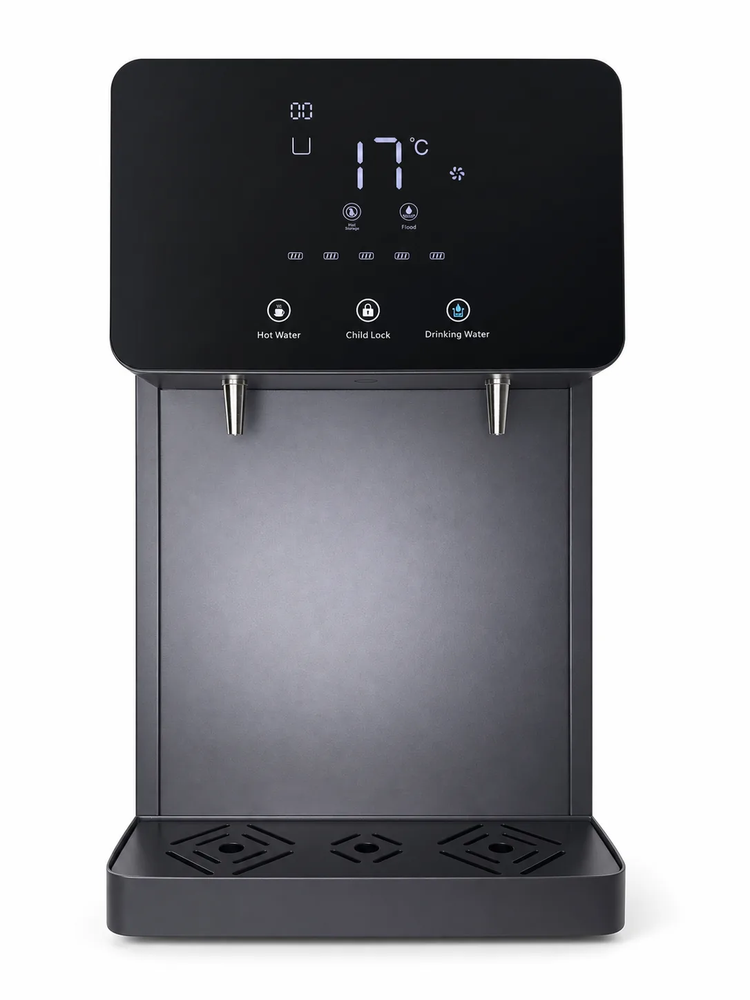
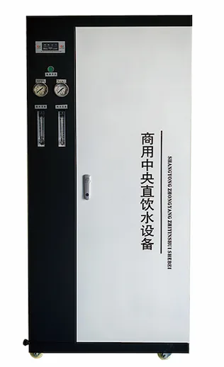
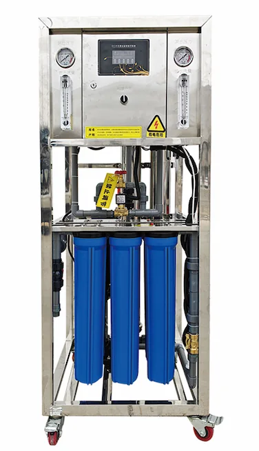
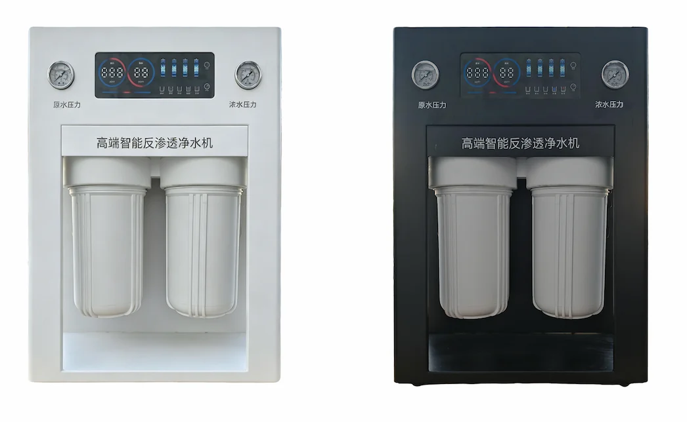
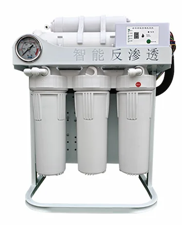
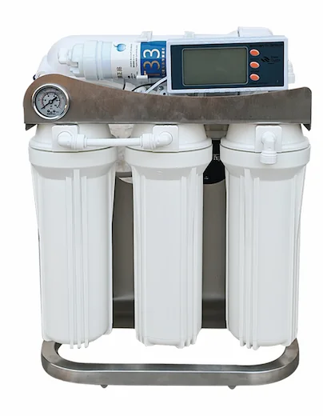
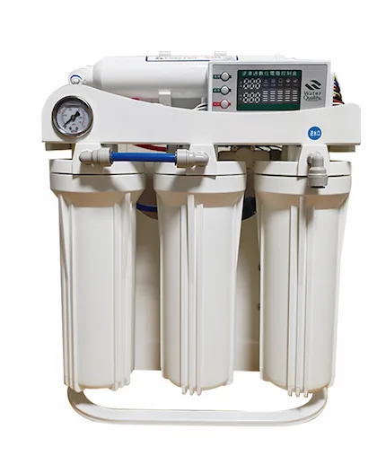
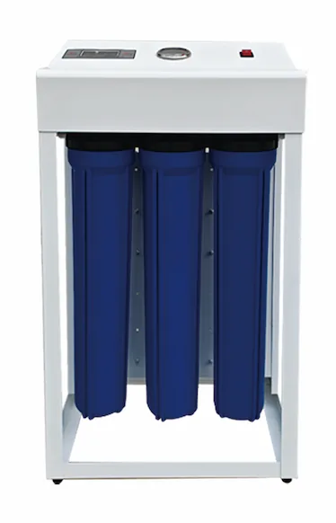
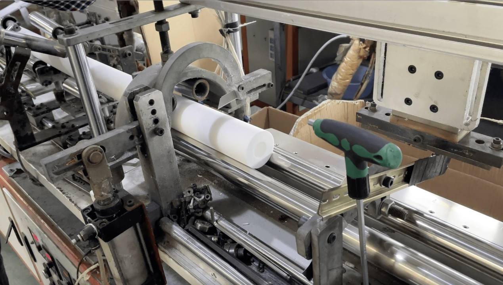
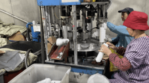

Custom 5/6/7 Stage RO Water Purifier
Custom 5/6/7 Stage RO Water Purifier — تھوک آرڈرز کے لیے براہ راست فیکٹری سپلائی، OEM/ODM تخصیص، تصدیق شدہ کوالٹی کنٹرول اور برآمدی دستاویزات کے ساتھ۔
تفصیلات دیکھیں →PP، CTO، GAC اور RO میمبرین کے سپلائر۔ 1998 سے خدمات۔
تھوک آرڈرز کے لیے براہ راست فیکٹری سپلائی، OEM/ODM تخصیص، تصدیق شدہ کوالٹی کنٹرول اور برآمدی دستاویزات کے ساتھ۔
تھوک آرڈرز کے لیے براہ راست فیکٹری سپلائی، OEM/ODM تخصیص، تصدیق شدہ کوالٹی کنٹرول اور برآمدی دستاویزات کے ساتھ۔
معیار کی دستاویزات درخواست پر دستیاب ہیں
FOB Shanghai/Ningbo · CIF · DDP · 50+
WhatsApp + email · OEM/ODM
تھوک آرڈرز کے لیے براہ راست فیکٹری سپلائی، OEM/ODM تخصیص، تصدیق شدہ کوالٹی کنٹرول اور برآمدی دستاویزات کے ساتھ۔
Custom 5/6/7 Stage RO Water Purifier — تھوک آرڈرز کے لیے براہ راست فیکٹری سپلائی، OEM/ODM تخصیص، تصدیق شدہ کوالٹی کنٹرول اور برآمدی دستاویزات کے ساتھ۔
تفصیلات دیکھیں →
Industrial RO machine and seawater desalination equipment for B2B projects, with custom 1T, 2T, 3T, 5T or larger capacity, pretreatment tanks, pumps, valves and export packaging.
تفصیلات دیکھیں →
10000-45000 ppm خام پانی کے لیے چھوٹا اور درمیانہ RO ڈی سیلینیشن سسٹم، 60-10000 L/h پیداوار اور OEM منصوبہ ترتیب۔
انکوائری بھیجیں
کمپریسر کولنگ والی ڈیسک ٹاپ RO واٹر مشین: چار مرحلوں کی فلٹریشن: PP + CTO + T33 + RO، 100G RO صلاحیت کے ساتھ; ٹھنڈے پینے کے پانی اور مستحکم کاؤنٹر ٹاپ استعمال کے لیے کمپریسر کولنگ; معیاری سیاہ باڈی؛ OEM/ODM کے لیے دیگر رنگ، لوگو، پینل زبان اور پیکنگ حسب ضرورت بن سکتی ہے؛ چائلڈ لاک دستیاب ہے.
انکوائری بھیجیں
پورٹیبل حسب ضرورت RO واٹر پیوریفائر: انٹیگریٹڈ کوئیک کنیکٹ PP سیڈمنٹ فلٹر + RO میمبرین 3013; 400G-800G; میونسپل نل کا پانی.
انکوائری بھیجیں
OEM منصوبوں کے لیے خودکار ریت اور کاربن ٹینک، پریسیژن فلٹریشن اور 1000-3000 L/h صاف پانی والا انٹیگریٹڈ اسکیڈ RO سسٹم۔
انکوائری بھیجیں
OEM منصوبوں کے لیے خودکار ریت اور کاربن ٹینک، پریسیژن فلٹریشن اور 1000-3000 L/h صاف پانی والا انٹیگریٹڈ اسکیڈ RO سسٹم۔
انکوائری بھیجیں
OEM منصوبوں کے لیے خودکار ریت اور کاربن ٹینک، پریسیژن فلٹریشن اور 250-1000 L/h صاف پانی والا انٹیگریٹڈ اسکیڈ RO سسٹم۔
انکوائری بھیجیں
خالص پانی کے ٹینک کے ساتھ چھ ہاؤسنگ RO سامان: 20″ PP + 20″ CTO + 20″ PP + RO; 250-1000 لیٹر/گھنٹہ; نل کا پانی اور زیر زمین پانی.
انکوائری بھیجیں
ایک ٹینک پری ٹریٹمنٹ RO سامان: خودکار ریت-کاربن ٹینک + 20 انچ PP + 20 انچ PP + RO; 250-500 لیٹر/گھنٹہ; نل کا پانی اور زیر زمین پانی.
انکوائری بھیجیں
ایک ٹینک والا 20 انچ بڑا PP پری فلٹر RO سامان: 20 انچ بڑا PP پری فلٹر + RO; 250-500 لیٹر/گھنٹہ; بلدیاتی نل کا پانی.
انکوائری بھیجیں
پتلا RO پانی صاف کرنے کا سامان: PP سیڈمنٹ فلٹر کارٹریج + فعال کاربن کارٹریج + RO; 250-500 لیٹر/گھنٹہ; بلدیاتی نل کا پانی.
انکوائری بھیجیں
تجارتی مرکزی RO پانی صاف کرنے کا سامان: 20 انچ PP + 20 انچ CTO + 20 انچ PP + RO; 250-500 لیٹر/گھنٹہ; نل کا پانی اور زیر زمین پانی.
انکوائری بھیجیں
تجارتی درمیانی کابینہ والا RO پانی صاف کرنے والا آلہ، اندرونی دباؤ ٹینک کے ساتھ: 20 انچ PP + 20 انچ CTO + 20 انچ PP + RO + T33; 400G-1600G; میونسپل نل کا پانی; 65*55*126 cm.
انکوائری بھیجیں
تجارتی چھوٹی کابینہ والا RO پانی صاف کرنے والا آلہ: 20 انچ PP + 20 انچ CTO + 20 انچ PP + RO + T33; 400G-1600G; میونسپل نل کا پانی; 55*35*96 cm.
انکوائری بھیجیں
پریسیژن فلٹر RO پانی صاف کرنے کا سامان: پریسیژن فلٹر + RO; 250-1000 لیٹر/گھنٹہ; میونسپل نل کا پانی.
انکوائری بھیجیں
سادہ قسم RO پانی صاف کرنے کا سامان: 20 انچ PP + 20 انچ CTO + 20 انچ PP + RO; 250-1000 لیٹر/گھنٹہ; میونسپل نل کا پانی.
انکوائری بھیجیں
افقی RO پانی صاف کرنے کا سامان: 10 انچ بڑے قطر والا PP + 20 انچ بڑے قطر والا کپاس-کاربن کمپوزٹ فلٹر + RO; 250 لیٹر/گھنٹہ; میونسپل نل کا پانی.
انکوائری بھیجیں
تجارتی ہائی فلو ڈیلکس بڑے ہاؤسنگ والا RO واٹر پیوریفائر: 10 انچ بڑے قطر والا PP + 10 انچ بڑے قطر والا کپاس-کاربن کمپوزٹ فلٹر + RO×2; 800G-1600G; میونسپل نل کا پانی.
انکوائری بھیجیں
تجارتی بڑے ہاؤسنگ والا RO واٹر پیوریفائر: 10 انچ بڑا PP پری فلٹر + RO + T33; 400G-800G; میونسپل نل کا پانی.
انکوائری بھیجیں
10 انچ فریم والا RO واٹر مشین: 10 انچ PP + 10 انچ UDF + 10 انچ PP + RO + T33 آخری کاربن; 400G-1200G; میونسپل نل کا پانی.
انکوائری بھیجیں
10 انچ فریم والا RO واٹر مشین موٹے اسٹین لیس اسٹیل فریم کے ساتھ: 10 انچ PP + 10 انچ UDF + 10 انچ PP + 3012 RO + T33 آخری کاربن; 400G-800G; میونسپل نل کا پانی.
انکوائری بھیجیں
10 انچ فریم والا RO واٹر مشین: 10 انچ PP + 10 انچ UDF + 10 انچ PP + 3012 RO + T33 آخری کاربن; 400G-800G; میونسپل نل کا پانی.
انکوائری بھیجیں
سامنے والے پینل کے ساتھ 10 انچ فریم والا RO واٹر مشین: 10 انچ PP + 10 انچ UDF + 10 انچ PP + 3012 RO + T33 آخری کاربن; 400G-800G; میونسپل نل کا پانی.
انکوائری بھیجیں
20 انچ فریم والا RO واٹر مشین: 20 انچ PP + 20 انچ UDF + 20 انچ PP + RO + T33 آخری کاربن; 400G-1200G; میونسپل نل کا پانی.
انکوائری بھیجیں
ایک ٹینک مربوط RO پانی صاف کرنے اور فراہمی کا سامان: خام پانی پمپ + خودکار ریت-کاربن ٹینک + 20 انچ PP + RO + سٹینلیس سٹیل صاف پانی ٹینک + متغیر فریکوئنسی پانی سپلائی پمپ; 250-500 لیٹر/گھنٹہ; نل کا پانی اور زیر زمین پانی.
انکوائری بھیجیں
OEM منصوبوں کے لیے خودکار ریت اور کاربن ٹینک، پریسیژن فلٹریشن اور 1000-3000 L/h صاف پانی والا انٹیگریٹڈ اسکیڈ RO سسٹم۔
انکوائری بھیجیں
واٹر پیوریفائر — تھوک آرڈرز کے لیے براہ راست فیکٹری سپلائی، OEM/ODM تخصیص، تصدیق شدہ کوالٹی کنٹرول اور برآمدی دستاویزات کے ساتھ۔
تفصیلات دیکھیں →
فلٹر کارٹریج — تھوک آرڈرز کے لیے براہ راست فیکٹری سپلائی، OEM/ODM تخصیص، تصدیق شدہ کوالٹی کنٹرول اور برآمدی دستاویزات کے ساتھ۔
تفصیلات دیکھیں →
فلٹر کارٹریج Big Blue — تھوک آرڈرز کے لیے براہ راست فیکٹری سپلائی، OEM/ODM تخصیص، تصدیق شدہ کوالٹی کنٹرول اور برآمدی دستاویزات کے ساتھ۔
تفصیلات دیکھیں →
فلٹر کارٹریج CTO — تھوک آرڈرز کے لیے براہ راست فیکٹری سپلائی، OEM/ODM تخصیص، تصدیق شدہ کوالٹی کنٹرول اور برآمدی دستاویزات کے ساتھ۔
تفصیلات دیکھیں →
فلٹر کارٹریج CTO — تھوک آرڈرز کے لیے براہ راست فیکٹری سپلائی، OEM/ODM تخصیص، تصدیق شدہ کوالٹی کنٹرول اور برآمدی دستاویزات کے ساتھ۔
تفصیلات دیکھیں →
صنعتی فلٹر CTO — تھوک آرڈرز کے لیے براہ راست فیکٹری سپلائی، OEM/ODM تخصیص، تصدیق شدہ کوالٹی کنٹرول اور برآمدی دستاویزات کے ساتھ۔
تفصیلات دیکھیں →
فلٹر کارٹریج — تھوک آرڈرز کے لیے براہ راست فیکٹری سپلائی، OEM/ODM تخصیص، تصدیق شدہ کوالٹی کنٹرول اور برآمدی دستاویزات کے ساتھ۔
تفصیلات دیکھیں →
فلٹر کارٹریج — تھوک آرڈرز کے لیے براہ راست فیکٹری سپلائی، OEM/ODM تخصیص، تصدیق شدہ کوالٹی کنٹرول اور برآمدی دستاویزات کے ساتھ۔
تفصیلات دیکھیں →20,000+ m² · ISO 9001 · PP/CTO/UF/RO/SMT

خودکار extrusion لائن · مسلسل پیداوار

سینٹرڈ CTO کاربن بلاک · ناریل شیل ایکٹیویٹڈ کاربن

Quick-connect inline filter assembly

شپمنٹ سے پہلے پریشر ٹیسٹ
Quick answers to help you make informed decisions about Yuchen Water products and services.
معیاری فلٹر کارٹریجز کے لیے MOQ عموماً 1,000 پیس سے شروع ہوتا ہے۔ OEM/ODM مقدار برانڈنگ، پیکیجنگ اور تفصیل پر منحصر ہے۔
منتخب مصنوعات NSF/ANSI 42، 53 اور 58 کے مطابق فراہم یا ٹیسٹ کی جا سکتی ہیں۔ ISO 9001، CE، SGS اور Halal متعلقہ دستاویزات درخواست پر دستیاب ہیں۔
Yuchen Water 1998 میں قائم ہوا اور واٹر فلٹریشن مینوفیکچرنگ میں 27 سال سے زیادہ تجربہ رکھتا ہے۔
اسٹاک آئٹمز: 7–10 دن۔ OEM پرنٹنگ: 20–25 دن۔ پیوریفائر اور ڈسپنسر پروجیکٹس: تصدیق کے بعد 30–45 دن۔
ہماری فیکٹری Yuanhua Town, Haining City, Zhejiang Province, China میں واقع ہے۔
ہم 50 سے زیادہ ممالک میں ڈسٹری بیوٹرز، امپورٹرز اور OEM خریداروں کو سپلائی کرتے ہیں۔